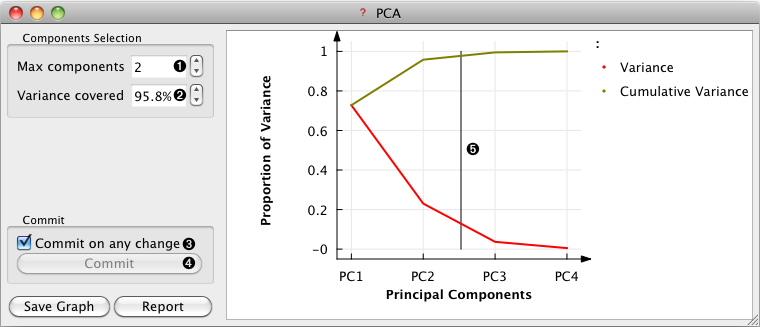

This is documentation for Orange 2.7. For the latest documentation, see Orange 3.
Principal Component Analysis¶

Channels¶
- Inputs:
- Input Data (Table)
- Outputs:
- Transformed Data (Table)
PCA transformed input data.
- Eigen Vectors (Table)
Eigen vectors.
Description¶
Principal Component Analysis (PCA) computes the PCA linear transformation of the input data.
- Specifies the maximum number of principal components to select (a special value ‘All’ specifies all the components)
- Specifies the number of components by the proportion of explained variance
- Output the transformed data and eigen vectors on any change to the widget settings.
- Send the transformed data and eigen vectors.
- Graph of the explained variance by PCA componenets. The vertical line can be dragged using the mouse.
The number of components of the transformation can be selected using either the Components Selection input box or by dragging the vertical cutoff line in the graph.